Charlemagne Garden Design
Charlemagne's Reign of the Holy Roman Empire spanned 47 years, until his passing in 814 C.E.(Common Era). Knowns as Charles or Karl the Great, he aimed to pay tribute to the Ancient Western Roman designs,
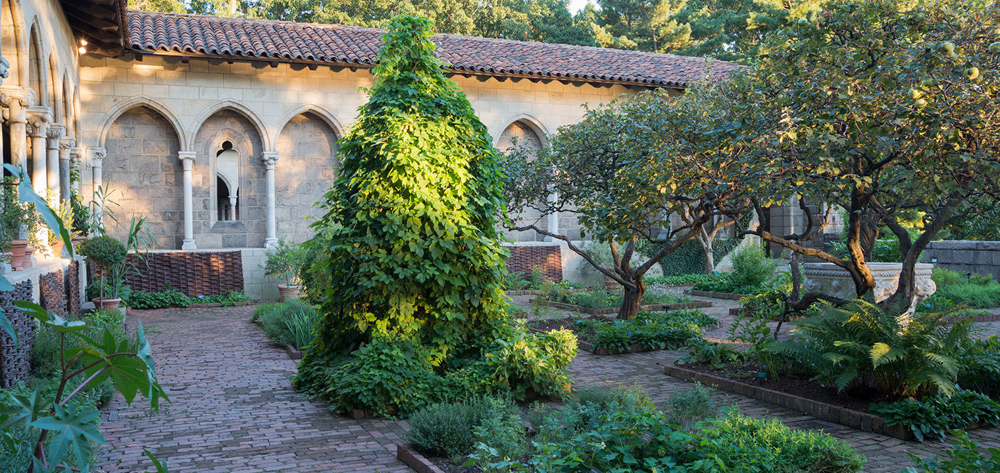
Charlemagne Garden Design
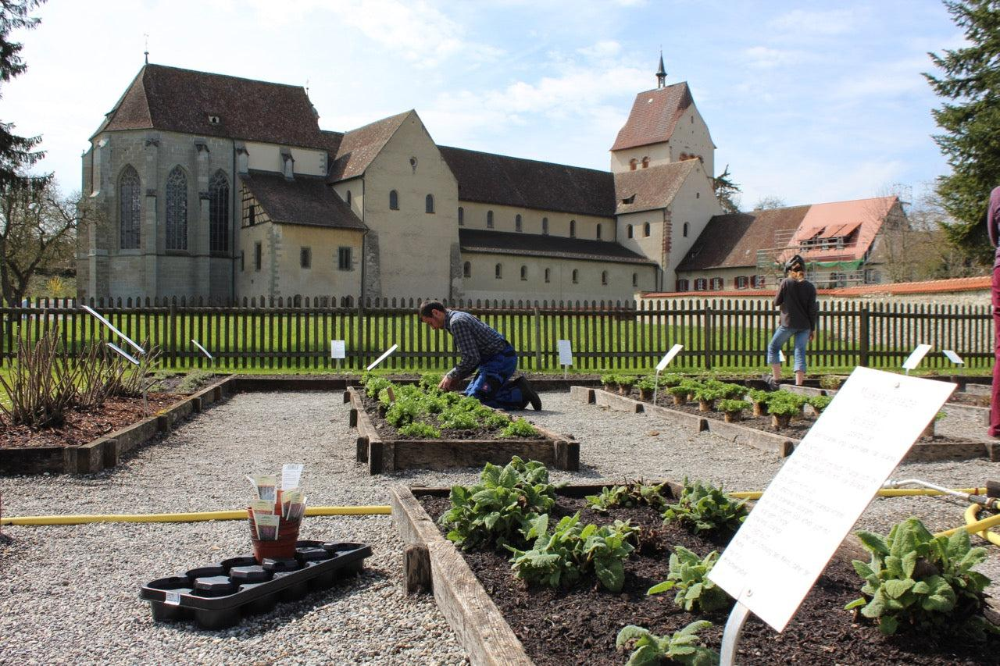
The Carolingian garden: classical heritage, monastic knowledge, and the cultivation of useful beauty
Charlemagne, also known as Charles the Great or Karl der Große, ruled the Frankish kingdom from 768 CE and was crowned emperor in 800 CE. He remained emperor until his death in 814 CE. His reign helped shape the Carolingian Renaissance, a period of renewed interest in classical learning, religious scholarship, architecture, and the administrative traditions of the former Western Roman Empire. Charlemagne's garden legacy is best understood through this revival of classical knowledge and the development of royal and monastic estates. Rather than simply reproducing the elaborate ornamental gardens of ancient Rome, Carolingian gardens combined inherited Roman ideas with the practical requirements of medieval life. They supplied food, medicine, herbs, flowers, and other resources while supporting the religious, intellectual, and ceremonial life of an estate. Gardens during this period were generally more functional and enclosed than the expansive ornamental landscapes associated with later European garden traditions. Within monasteries, royal residences, and rural estates, cultivated spaces were organized to make productive use of land, protect valuable plants, and provide convenient access to essential herbs and crops. The resulting garden aesthetic was one of order, enclosure, usefulness, and quiet beauty: a cultivated landscape where medicinal herbs grew alongside edible plants, flowering species added colour and symbolic meaning, and the arrangement of beds reflected the wider Carolingian interest in organization and learning.
1. The Historical Foundations of Charlemagne's Gardens
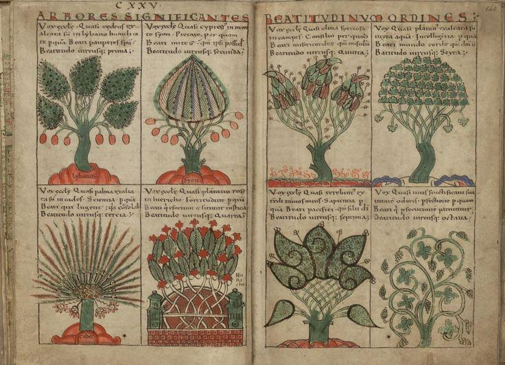
Charlemagne's court encouraged the preservation and study of classical texts, the reform of religious institutions, and improvements in the administration of royal estates. These developments influenced how cultivated land was managed and how knowledge of plants was transmitted.
Gardens were important to this world because they connected several aspects of medieval society:
- Royal administration: Estates needed organized systems for producing food, maintaining livestock, and supplying households.
- Monastic scholarship: Religious communities preserved and developed knowledge of medicinal plants, cultivation, and the natural world.
- Classical revival: Roman agricultural writings and inherited horticultural practices remained influential.
- Christian symbolism: Certain flowers and plants acquired associations with purity, devotion, and religious imagery.
- Practical self-sufficiency: Herbs, vegetables, fruit trees, and medicinal plants contributed to the daily needs of communities.
One important historical source is the Capitulare de villis, a royal administrative text traditionally associated with Charlemagne's reign. It provides instructions concerning the management of royal estates and includes a list of plants to be cultivated. Although the precise date, authorship, and scope of the document remain subjects of historical discussion, it offers valuable insight into Carolingian expectations for organized estate production.
The plant list includes culinary and medicinal herbs, vegetables, fruit trees, and ornamental or useful plants. It demonstrates that the Carolingian garden was not merely decorative: it formed part of a wider system of agricultural and household management.2. Flowers of the Carolingian Garden
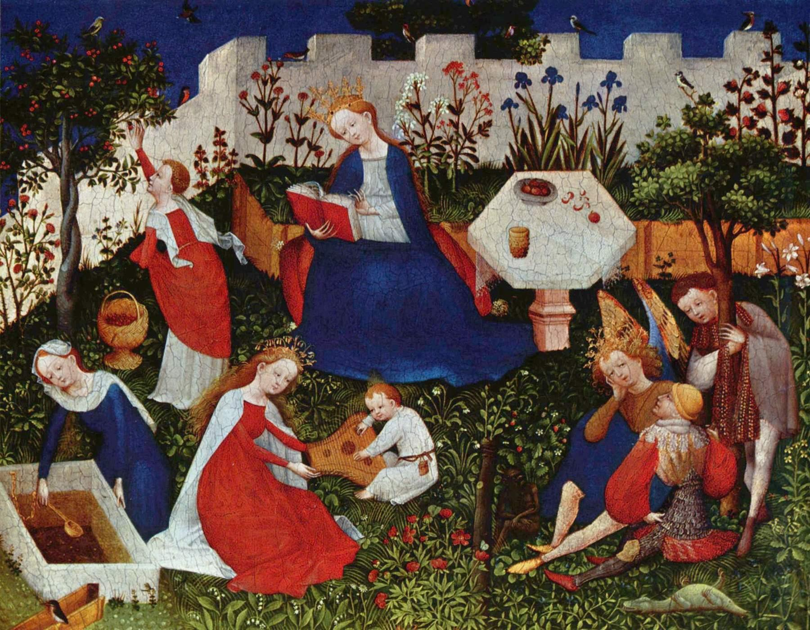
Flowers brought beauty, symbolism, and practical value to the enclosed gardens of the Carolingian period. Although surviving evidence does not establish one universal ornamental garden design under Charlemagne, lilies, roses, and irises are appropriate plants for a historically inspired garden drawing on medieval European horticultural traditions.
Lily
The lily was admired for its elegant form and became an important symbol of purity and spiritual devotion in Christian art and culture. Its upright stems and prominent flowers would have brought height and refinement to cultivated spaces. In a Carolingian-inspired garden, lilies can be planted near a chapel, along a sheltered wall, or within a small ornamental bed beside medicinal herbs. White lilies create a restrained, luminous display, while other colours introduce gentle variation. For a modern interpretation, select lily varieties suited to the local climate and plant them in fertile, well-drained soil.
Rose
Roses offer a connection between classical horticultural traditions and medieval European gardens. Their fragrance, colourful blooms, and usefulness in preparations made them valued plants long before the elaborate rose gardens of later centuries. In Christian symbolism, the rose gradually acquired associations with the Virgin Mary and spiritual devotion. Roses could also be appreciated for their fragrance and ornamental qualities. A historically inspired garden might feature simple shrub roses beside a stone wall or along the boundary of an enclosed courtyard. Soft pink, white, and deep red varieties complement the understated character of a medieval landscape.
Iris
The iris contributes graceful foliage and striking flowers in shades of blue, violet, white, and yellow. Irises were known in the wider classical and medieval world, and their forms suit a garden that combines useful cultivation with ornamental planting. The iris also has a broader association with European heraldic traditions, although the familiar French fleur-de-lis should not be treated as a direct or exclusive symbol of Charlemagne's garden design. Plant irises along the edges of garden beds or in small groups where their upright foliage provides contrast with the softer growth of culinary herbs.
3. The Herb Garden
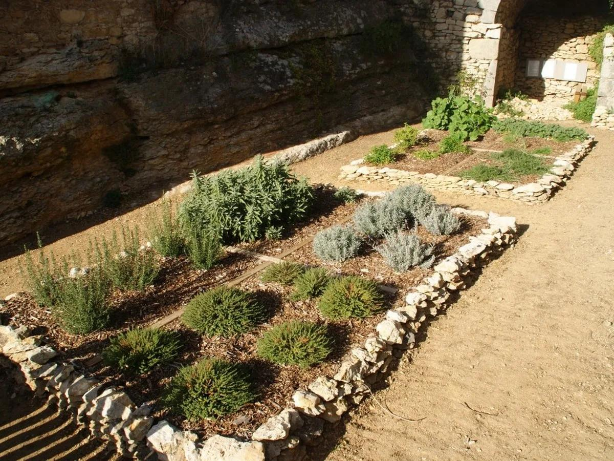
Herbs formed an essential part of medieval horticulture. They supplied flavourings for food, aromatic materials, and ingredients for traditional medicinal preparations. Their cultivation also reflected the preservation of practical botanical knowledge through household traditions, written sources, and monastic communities. A garden inspired by Charlemagne's era can be arranged into orderly beds, with individual herbs grouped according to their uses. Low timber edging, woven wattle borders, stone paths, and simple labels help create a sense of structure without introducing features from much later formal garden styles. The following plants are included in your proposed palette and are appropriate for a historically inspired Carolingian herb garden.
Betony
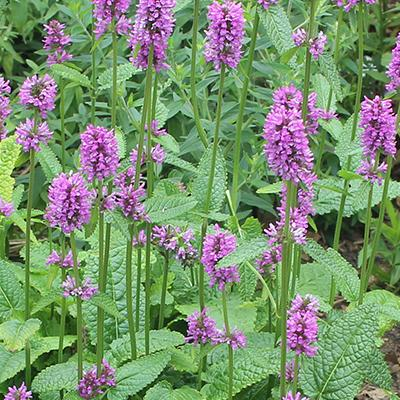
Betony (Stachys officinalis) was valued in traditional European herbal medicine. Its upright stems and purple-pink flower spikes add vertical accents to the herb garden, while its foliage forms an attractive low-growing clump.
Chives
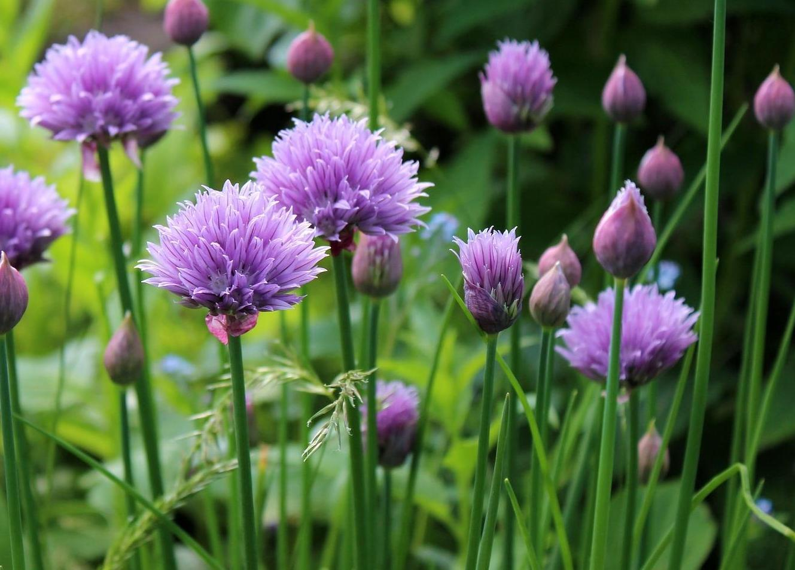
Chives provide slender, grass-like leaves and rounded purple flowers. Their culinary value and compact growth make them suitable for the edges of raised beds and for planting near kitchen entrances.
Coriander
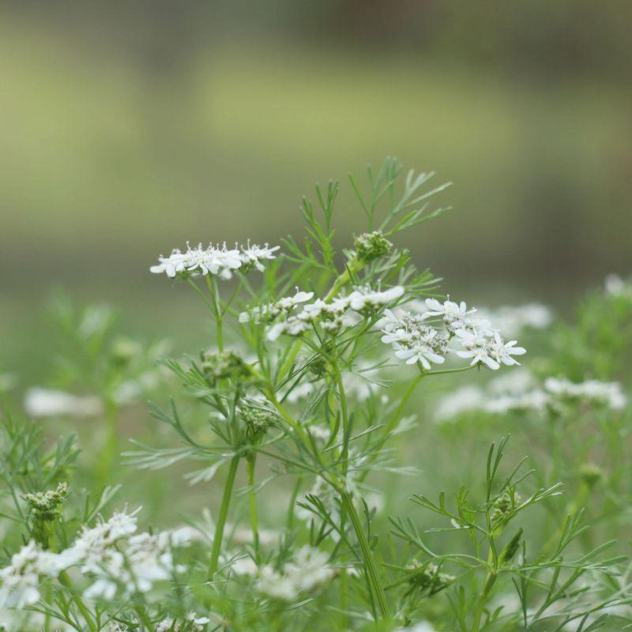
Coriander offers aromatic foliage and seeds used in cooking. Its delicate leaves and airy white flower clusters introduce a lighter texture among sturdier herbs.
Fennel
Fennel produces tall stems, feathery foliage, and yellow flower umbels. Its height makes it useful toward the back of a bed, where it provides a soft screen without obscuring smaller plants.
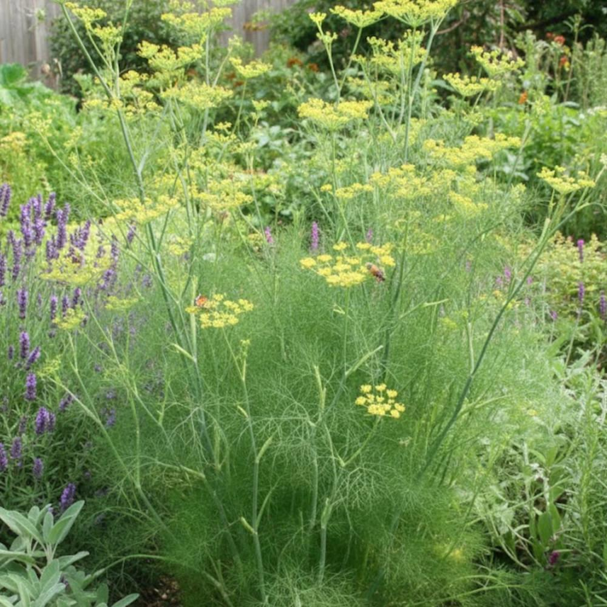
Garden Cress

Garden cress is a fast-growing edible plant with a peppery flavour. It is well suited to small plots and succession sowing, reflecting the practical emphasis of medieval kitchen gardens.
Mint
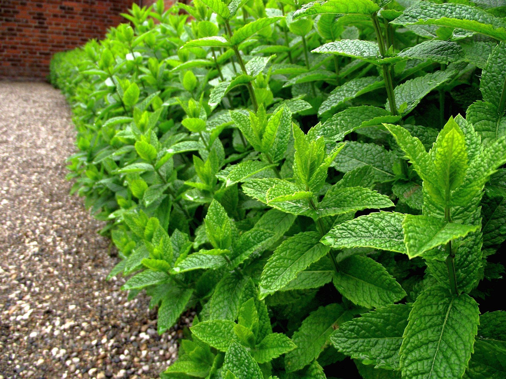
Mint contributes aromatic foliage and is useful in culinary and traditional herbal preparations. Because it spreads vigorously, it is best grown in a contained bed or separate pot.
Parsley
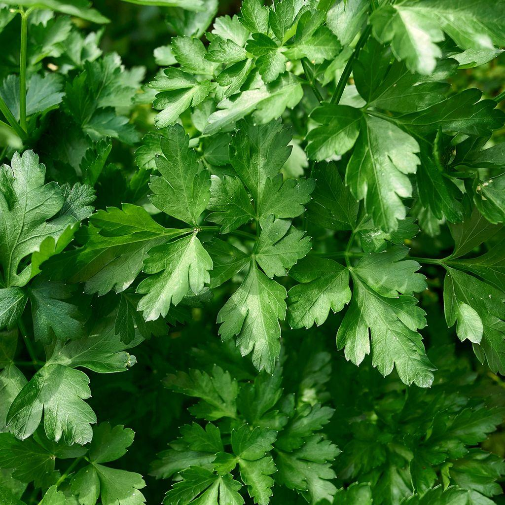
Parsley forms dense, bright-green foliage and is a versatile culinary herb. It can be planted along the front of a bed, where its compact form provides a neat visual border.
Sage
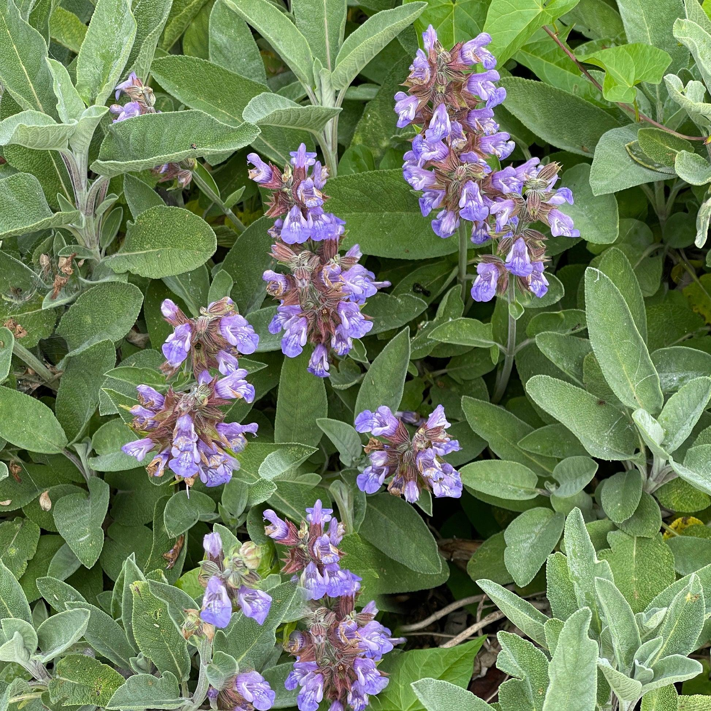
Sage's textured, grey-green leaves provide contrast against darker foliage. Its aromatic character and culinary uses make it a natural choice for a garden that balances usefulness with beauty.
Savory
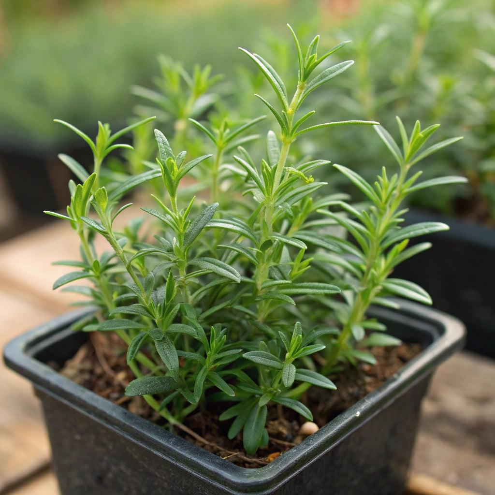
Savory is an aromatic culinary herb with fine foliage and small flowers. Summer savory grows quickly, while winter savory offers a more persistent, shrub-like form in suitable climates.
Tansy
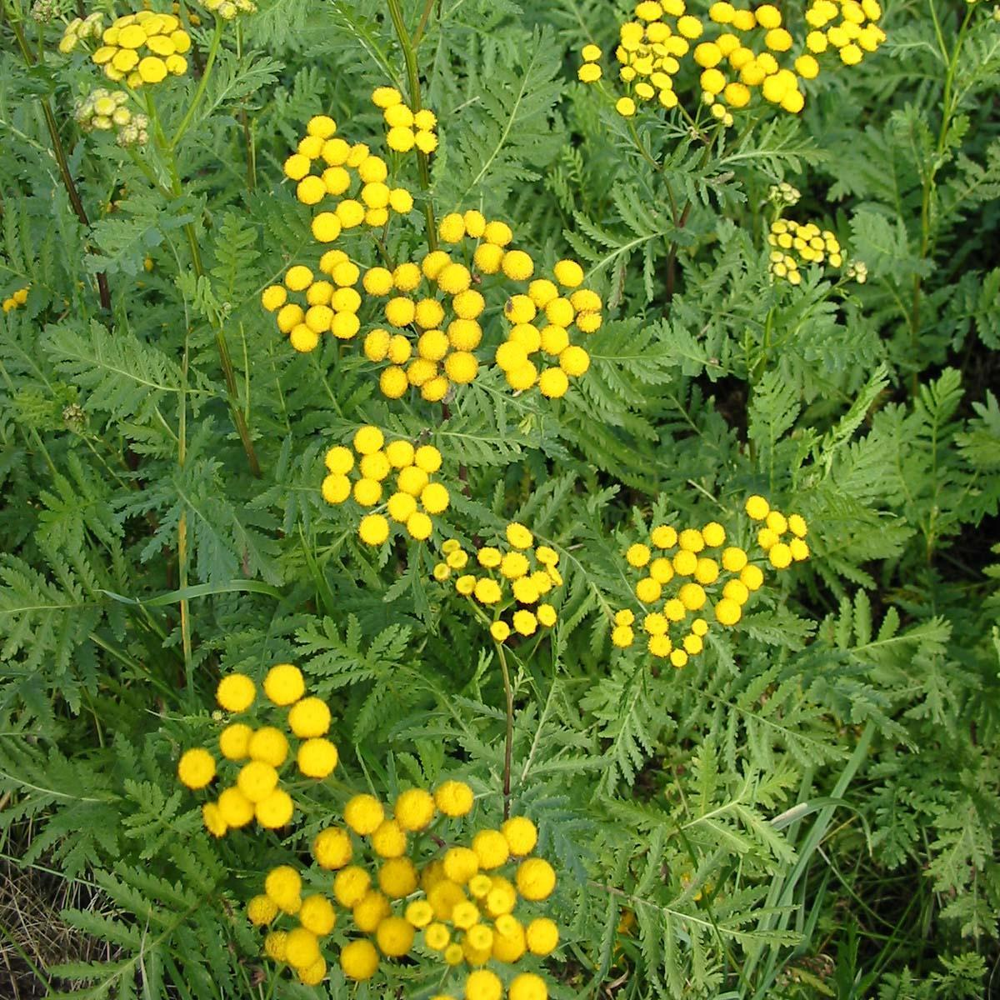
Tansy has finely divided foliage and clusters of bright yellow, button-like flowers. It has a long history of traditional use, but it should be handled carefully because it contains potentially toxic compounds. It can also spread aggressively, so a contained planting is advisable. Historical note: Several of these plants appear in the plant inventory associated with the Capitulare de villis. The exact use and prevalence of individual species varied, and their inclusion in a modern reconstruction does not mean every Carolingian garden contained all of them.
4. Organizing the Carolingian Garden
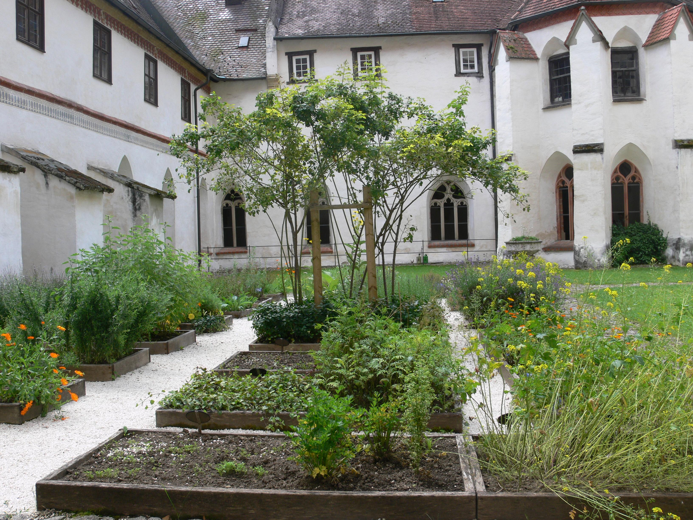
The enclosed garden is a useful starting point for a Carolingian-inspired design. Walls, hedges, fences, and sheltered courtyards protected plants from animals and harsh weather while establishing a clear boundary between cultivated space and the wider landscape. A modern interpretation can organize the garden into several functional areas. The herbarium or medicinal garden: Group herbs in clearly defined beds, with paths providing easy access for tending and harvesting. The flowering garden: Plant lilies, roses, and irises where their flowers can be appreciated from a walkway or sheltered seating area. The kitchen garden: Reserve a sunny section for edible herbs and vegetables, emphasizing productivity and seasonal renewal. The orchard: Incorporate fruit trees where space permits. Apples, pears, and other suitable fruit trees provide shade and reinforce the relationship between the garden and the productive estate. The enclosed courtyard: Create a quiet space for reflection, using a central focal point, restrained planting, and natural materials. Although the later medieval cloister garden became a recognizable enclosed garden form, it is important not to assume that every Carolingian garden followed a standardized cross-shaped layout. The design should reflect the intended historical setting, whether a royal estate, monastery, or domestic garden.
5. Materials and Features
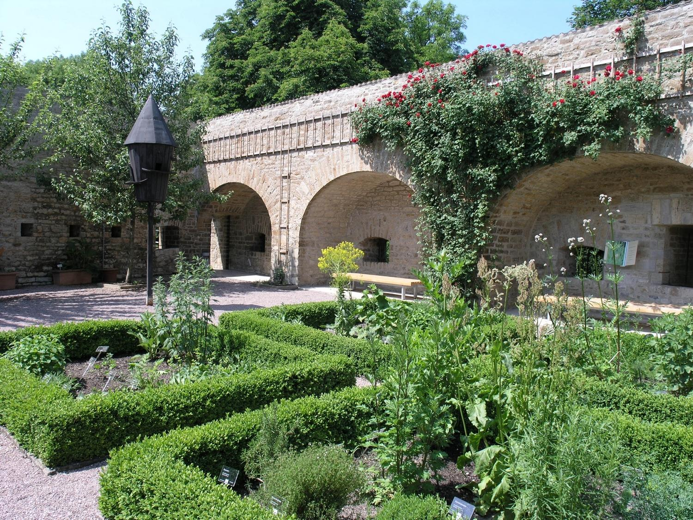
The materials of a Carolingian-inspired garden should convey simplicity, durability, and a close relationship with the land.
- Stone: Use local stone for pathways, edging, low walls, and modest seating.
- Timber: Simple wooden borders and rustic structures can define cultivation areas.
- Wattle fencing: Woven branches create lightweight enclosures inspired by traditional craft.
- Clay vessels: Terracotta pots provide places for selected herbs and smaller plants.
- Gravel and earth paths: Uncomplicated surfaces keep the focus on cultivation rather than ornament.
- Wooden plant markers: Simple labels can identify culinary and medicinal species.
Decoration should remain restrained. A modest stone basin, a wooden bench, or a carefully placed flowering rose may contribute more to the atmosphere than elaborate statuary or highly symmetrical parterres, which would risk shifting the design toward later historical periods.
6. Adapting Charlemagne's Garden to the Okanagan
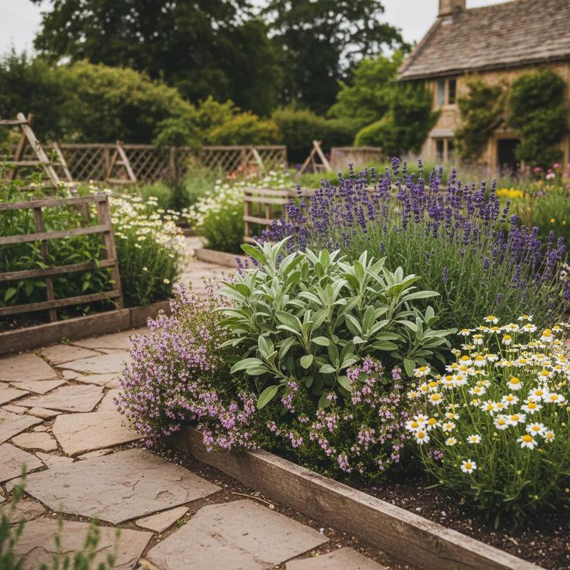
The principles of the Carolingian garden translate well to the Okanagan, where sunny summers favour many culinary herbs and flowering perennials. The main consideration is selecting plants that tolerate local winter temperatures, summer dryness, and the garden's particular soil conditions.
For a Practical Contemporary Design:
- Choose locally hardy lilies, roses, and irises for permanent flowering beds.
- Grow sage and suitable perennial herbs in well-drained soil.
- Contain mint and other vigorous spreaders to prevent them from overtaking neighbouring plants.
- Sow coriander, garden cress, and other annual herbs in successive plantings.
- Use mulch and efficient irrigation to manage summer moisture.
- Incorporate fruit trees suited to the local climate.
- Establish simple paths and clearly defined beds that make harvesting and maintenance easy.
The result is a garden that reflects the Carolingian emphasis on organized cultivation while remaining useful and sustainable in a modern landscape.
The Defining Characteristic of Charlemagne Garden Design
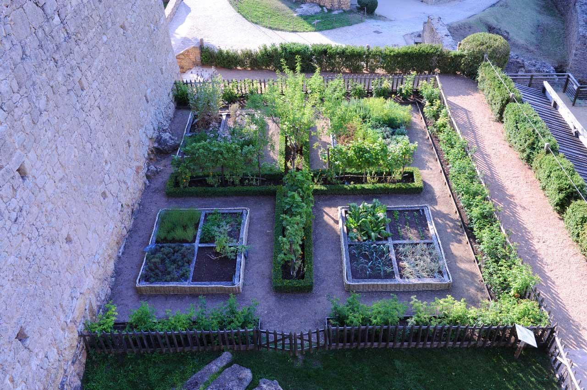
The garden tradition associated with Charlemagne is distinguished by its combination of classical inheritance, productive cultivation, medicinal knowledge, and Christian-era cultural symbolism. Its significance lies less in a single decorative style than in the organization of plants and land to support the life of a royal or religious estate.
Lilies, roses, and irises provide flowering beauty; betony, chives, coriander, fennel, garden cress, mint, parsley, sage, savory, and tansy represent the practical diversity of the herb garden. Enclosed beds, modest paths, fruit trees, and rustic materials bring these elements together in a landscape that is both cultivated and purposeful.
For a contemporary garden, this historical approach offers an enduring lesson: beauty and usefulness need not be separated. A thoughtfully organized garden can provide flowers, fragrance, food, and herbs while preserving the quiet, grounded character of a medieval landscape.